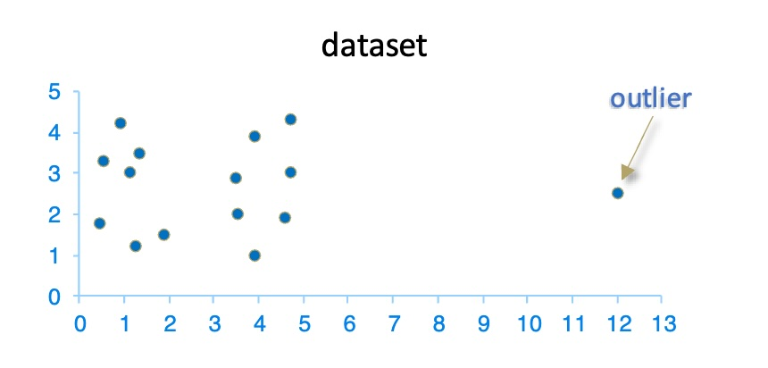
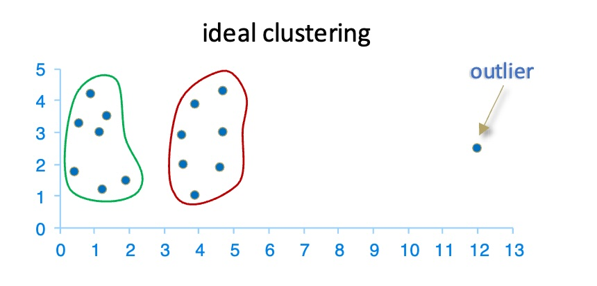
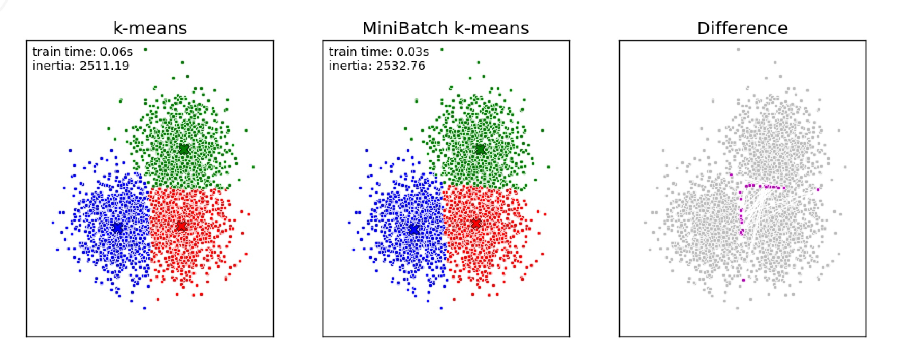
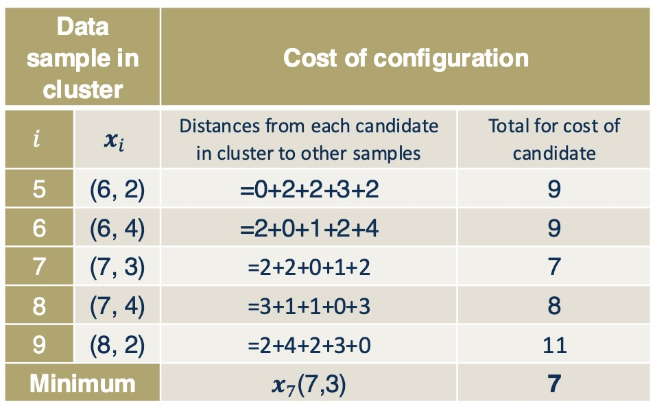
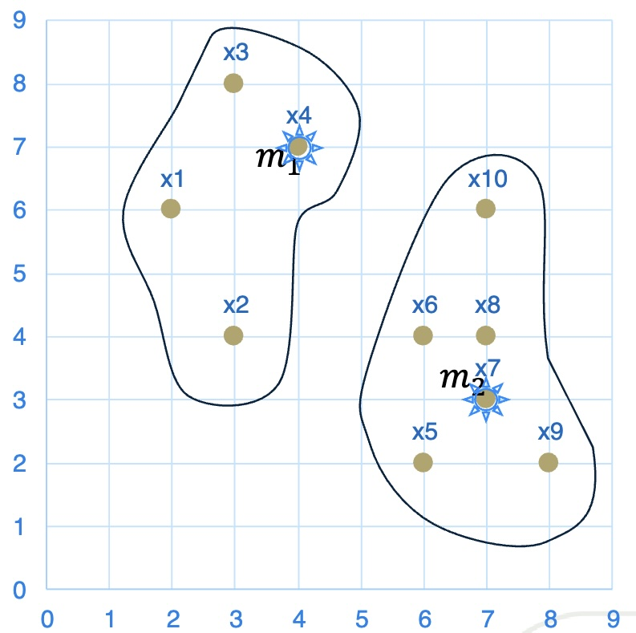
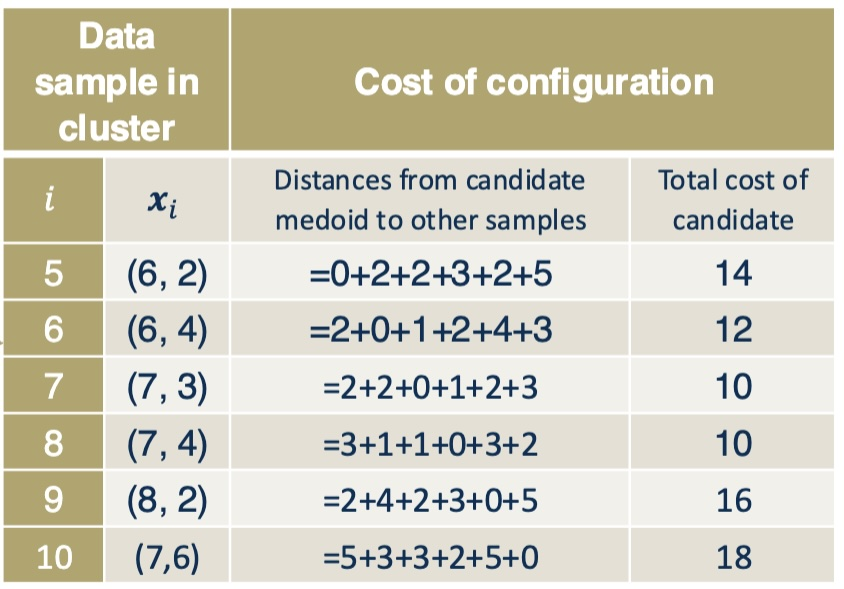
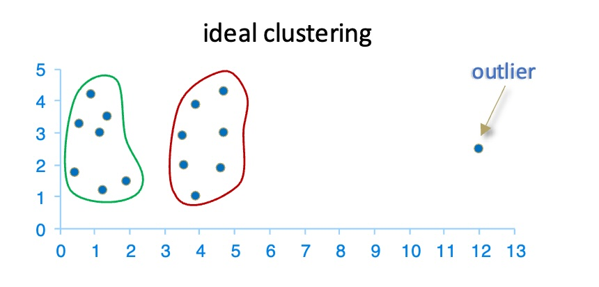
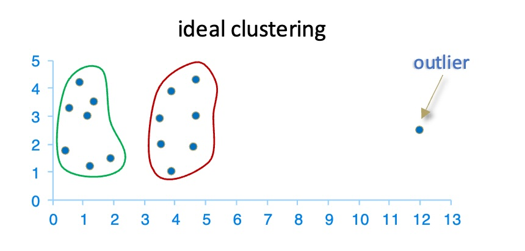

Contributors: Dr. Ahmad Mustafa, Dr. Motaz Alfarraj, Dr. Ashraf Alattar, Dr. Chen Zhou
Teaching Assistants with remarkable contributions include: Kuo-Wei Lai, Wuyang Du, Shiva Mahato, Michael Zhou, Ninghan Zhong
Disclaimer: All content of these notes are part of this course at Georgia Tech. Any re-use or distribution is not permitted without pre-approved permission. All these notes belong to, created by, and copyrighted for Ghassan AlRegib and Mohit Prabhushankar, Georgia Tech, 2021–2028.
In the previous lecture, we introduced the concept of clustering, discussed its motivation, and explored several real-world applications. We also developed the mathematical foundations required to measure similarity and understand the geometry of data in feature space. Building on that foundation, this lecture focuses on one of the most widely used clustering algorithms in practice: k-means clustering.
The goal of this lecture is to move from conceptual understanding to algorithmic implementation. We will formalize the k-means problem, study the standard training and inference procedures, analyze convergence behavior, and examine practical considerations such as initialization and the choice of the number of clusters. By the end of this lecture, students should understand both the theory and the practical workflow required to apply k-means clustering to real datasets.
1.2 K-Means Clustering
In this lecture, we develop a complete understanding of the k-means clustering pipeline. We begin by formulating the k-means optimization problem and interpreting its objective function. We then present the standard iterative algorithm used to learn cluster centroids and assign data points to clusters.
Next, we discuss the convergence criteria of the algorithm and explain why the objective function decreases monotonically during training. We then walk through a detailed step-by-step example to build geometric intuition for how the algorithm behaves in practice.
Finally, we study the initialization problem, which plays a crucial role in the quality and stability of the final clustering solution. This includes strategies for choosing the number of clusters and selecting good initial centroid locations.
1.2.1 K-Means Problem Statement
K-means clustering aims to partition a dataset into a predefined number of groups, or clusters, such that data points within the same cluster are similar to each other and dissimilar to points in other clusters. Formally, we are given a dataset \[X=\{x_1,x_2,\ldots,x_N\},\] where each data sample \(x_i=[x_{i1},x_{i2},\ldots,x_{iP}]^T\) lies in a \(P\)-dimensional feature space. The goal is to divide the dataset into \(k\) clusters \(\{C_1,C_2,\ldots,C_k\}\), where the value of \(k\) is chosen in advance.
The key idea behind k-means is that each cluster is represented by a centroid, which acts as the “center” of the cluster. Every data point is assigned to the cluster whose centroid is closest to it according to the Euclidean distance. This assignment rule encourages points that are spatially close in the feature space to be grouped together.
Once cluster assignments are made, the centroid of each cluster is recomputed as the mean of the data points assigned to that cluster: \[m_j = \frac{1}{|C_j|} \sum_{x_i \in C_j} x_i.\] This definition explains the name k-means: each cluster center is the mean of its assigned points.
Intuitively, the algorithm searches for cluster centers that best summarize the data. By repeatedly assigning points to the nearest centroid and recomputing the means, the algorithm gradually moves the centroids toward regions of high data density.
This process can be interpreted as minimizing the total squared distance between data points and their assigned centroids. This objective, known as the within-cluster sum of squares (WCSS), will be formally introduced in the next section.
1.2.2 Standard Algorithm of k-Means Clustering
The k-means algorithm follows an iterative optimization procedure that alternates between two simple steps: assigning data points to clusters and updating cluster centers. Although each step is straightforward, repeatedly alternating between them gradually improves the clustering solution. Intuitively, the algorithm starts with an initial guess of where cluster centers might be located and then refines these guesses until the assignments stop changing.
This alternating procedure is an example of coordinate descent: during each iteration, the algorithm improves the cluster assignments while keeping the centroids fixed, and then improves the centroid locations while keeping the assignments fixed. Each iteration reduces the clustering objective (within- cluster sum of squares), which guarantees that the algorithm will eventually converge.
The k-means algorithm consists of two main phases: a training phase, in which centroids are learned from the dataset, and an inference phase, in which new data points are assigned to the nearest learned centroid.
Input: Data points \(X = \{x_1, x_2, ..., x_N\}\), Number of clusters \(k\)Output: Centroids \(M = \{m_1, m_2, ..., m_k\}\), Cluster memberships \(C_j\) Randomly initialize \(k\) centroids \(M^{(0)} = \{m_1^{(0)}, m_2^{(0)}, ..., m_k^{(0)}\}\) from the data (Step 1) Assign each data point \(x_i\) to the nearest centroid: (Step 2)\[C_j^{(t)} = \left\{ x_i : \|x_i - m_j^{(t)}\|_2 \leq \|x_i - m_l^{(t)}\|_2, \forall l, 1 \leq l \leq k \right\}\] Recompute the centroids for each cluster: (Step 3)\[m_j^{(t+1)} = \frac{1}{\left|C_j^{(t)}\right|} \sum_{x_i \in C_j^{(t)}} x_i,
\quad \forall j,\ 1 \leq j \leq k\]Return: Final centroids \(M\) and cluster memberships \(C_j\)
k-Means Clustering Standard Algorithm Procedure
Once the centroids have been learned, the clustering model can be used to assign new data points to clusters. This stage is referred to as the inference phase. Unlike the training phase, no centroid updates occur here; the learned centroids are treated as fixed representatives of the clusters. The assignment process is therefore computationally inexpensive and requires only distance computations.
Input: New data point \(x_{\text{new}}\), Final centroids \(M = \{m_1, m_2, ..., m_k\}\)Output: Cluster assignment for \(x_{\text{new}}\) Compute the Euclidean distance between \(x_{\text{new}}\) and each centroid \(m_j\): \[d_j = \|x_{\text{new}} - m_j\|_2, \quad \forall j, 1 \leq j \leq k\] Assign \(x_{\text{new}}\) to the cluster with the closest centroid: \[\text{Cluster}(x_{\text{new}}) = \arg \min_{j} d_j\]Return: The cluster assignment for \(x_{\text{new}}\)
1.3 Convergence Criteria
Convergence criteria are used to determine when the algorithm should stop. In k-means, convergence is typically declared when the cluster assignments no longer change, the centroids no longer move appreciably, or the objective function stops decreasing.
Cluster assignments become static: no data points are reassigned to a different cluster between two iterations.
Centroids become static: centroid updates become negligible (or exactly unchanged).
The objective stops improving: the change in the sum of squared distances (SSD) between iterations becomes very small.
To define the objective, let \(C_j\) be the \(j\)th cluster and \(m_j\) be its centroid. Using Euclidean distance, the Sum of Squared Distances (SSD) is: \[\mathrm{SSD} = \sum_{j=1}^k \sum_{x_i \in C_j} \|x_i - m_j\|_2^2.\]
Each iteration of k-means consists of an assignment step and an update step. Both steps are guaranteed to never increase the SSD: assigning each point to the nearest centroid reduces the distance within each cluster, and recomputing centroids as means minimizes the squared distance within each cluster given fixed assignments. As a result, the SSD decreases monotonically with every iteration.
Since there are only finitely many possible cluster assignments, the algorithm must eventually stop. This guarantees that k-means always converges in a finite number of iterations.
It is important to note, however, that k-means converges to a local minimum, not necessarily the global optimum. The final solution depends on the initial centroid placement, which is why different random initializations can produce different clustering results.
1.4 Examples of k-Means Clustering
1.4.1 First Iteration
With the problem statement, standard algorithm, and convergence criteria introduced, we will now look at a few examples to enhance our concept. This is the sample data we will work within this example.
Data Points
Step 1 of the algorithm states we will randomly choose k points from all data points to be the initial centroids. So we predefined \(k=3\), and chose \(m_1\),\(m_2\), and \(m_3\) as centroids.
Initialized centroids
Step 2 is the assignment step. We need to determine cluster membership for each sample using the Euclidean distance equation: \[C_j^{(t)} = \left\{ x_i : \|x_i - m_j^{(t)}\|_2 \leq \|x_i - m_l^{(t)}\|_2 \, \forall l, 1 \leq l \leq k \right\}.\] For example, if sample \(x_1\) has coordinates (0.8, 4.2) and the centroid \(m_1\) has coordinates (2.1, 3.9), then the Euclidean distance is calculated as: \[d(x_1, m_1) = \sqrt{(0.8 - 2.1)^2 + (4.2 - 3.9)^2} \approx 1.334.\]
Assuming this distance is the smallest, \(x_1\) will be assigned to cluster \(C_1\). After determining cluster membership for each sample, the following result is obtained.
Assignment of all samples using Euclidean distance
Step 3 is the update step, where we need to re-estimate centroids (mean) of all three current clusters using the formula \(m_j = \frac{1}{|C_j|} \sum_{x_i \in C_j} x_i, \quad \forall j, 1 \leq j \leq 3\). For example, does \(m_1\) centroid, the updated mean will be calculated by \(m_1=(\frac{0.8+2.1+3.2+3.7+....+7.3}{9},\frac{4.1+3.9+4.3+....+3.1}{9})\).
centroids move the to the calculated mean of the clusters
1.4.2 Second Iteration
Now, we have to repeat steps 2 and 3 in the second iteration since we have not yet reached the convergence criteria. First, we need to re-assign cluster membership for each point. Repeat step 2 calculation using the equation \[C_j^{(t)} = \left\{ x_i : \|x_i - m_j^{(t)}\|_2 \leq \|x_i - m_l^{(t)}\|_2 \, \forall l, 1 \leq l \leq k \right\}.\] we reached this plot:
Second iteration assignment cluster membership
Based on the reassigned clusters, we need to update the centroids using the previously introduced equation for step 3:\(m_j = \frac{1}{|C_j|} \sum_{x_i \in C_j} x_i, \quad \forall j, 1 \leq j \leq 3\)
second iteration update step: Re-estimate centroids
1.4.3 Third Iteration
With the new centroid, we need to reassign the samples to the clusters in the third iteration since the convergence criteria have yet to be met. The assignment step will reassign samples to their respective centroids using the Euclidean distance equation.
Third iteration update step
After the assignment step, we will repeat step 3 to update and re-estimate centroids:
Third iteration update step
1.4.4 Fourth Iteration
We will reassign every point. However, since there are no changes in cluster membership, the algorithm converges as the convergence criteria are met.
Converged Algorithm, and final cluster assignment
1.5 Initialization
The outcome of k-means depends strongly on initialization. Unlike many supervised learning algorithms, k-means optimizes a non-convex objective, which means the algorithm can converge to different local minima depending on the starting point. As a result, two runs of k-means on the same dataset can produce different clustering results if the initialization changes.
In practice, two choices matter most: (1) the number of clusters \(k\), and (2) how the initial centroids are selected. Poor initialization can lead to slow convergence and/or a suboptimal local minimum of the SSD objective.
Choosing the number of clusters \(k\).
If \(k\) is too small, distinct groups may be merged. If \(k\) is too large, natural groups may be split into multiple clusters. This highlights an important trade-off: small \(k\) leads to overly simple models (under-segmentation), while large \(k\) leads to overly complex models (over-segmentation).
Figure 11 illustrates that when the ground truth has 3 clusters, choosing \(k=8\) forces the algorithm to produce many small clusters that do not match the true structure. Notice that increasing \(k\) always reduces the SSD objective, but this does not necessarily improve the interpretability or quality of the clustering.
Different choices of \(k\) lead to different clustering results.
Choosing initial centroids.
Even when the correct value of \(k\) is chosen, the algorithm may still converge to different solutions depending on the initial centroid locations. Because k-means iteratively refines clusters using local updates, the algorithm may become trapped in a local minimum of the SSD objective.
Figure 12 shows that selecting centroids in different regions of the space can produce drastically different cluster assignments. In one case, the algorithm quickly finds a good clustering, while in another case, it converges to a poorer solution.
This sensitivity to initialization is the main motivation behind improved initialization methods such as k-means++, which selects well-separated starting centroids to increase the likelihood of finding a better solution.
Different methods of initializing centroids can change the outcome.
1.5.1 Choice of \(k\)
Selecting the number of clusters is one of the most important and challenging decisions when using k-means. Because clustering is an unsupervised task, the true number of groups is typically unknown, and different values of \(k\) can lead to very different interpretations of the same dataset.
There are several common strategies for selecting \(k\):
Domain knowledge. Use prior knowledge of the problem to estimate how many groups are expected. In many real-world applications, subject-matter expertise provides strong guidance. For example, in customer segmentation, a business may already know that customers fall into a small number of marketing segments.
Elbow / objective-based selection. Run k-means for multiple values of \(k\) and choose a value that balances model simplicity and fit by examining the SSD objective: \[\mathrm{SSD}(k) = \sum_{j=1}^k \sum_{x_i \in C_j} \|x_i - m_j\|_2^2.\] As \(k\) increases, SSD always decreases because more clusters provide more flexibility. However, beyond a certain point the improvement becomes small. The elbow point—where the curve bends and begins to flatten—often provides a reasonable compromise between underfitting (too few clusters) and overfitting (too many clusters).
Validation-based selection. If an external evaluation metric is available (for example, labeled data used only for evaluation), clustering results for different values of \(k\) can be compared using that metric. In practice, internal validation metrics such as silhouette score or Davies–Bouldin index are also commonly used when labels are not available.
1.5.2 Choice of Initial Centroids
Initialization plays a critical role in the success of k-means because the algorithm converges to a local minimum of the objective function. Poor initial centroids can lead to slow convergence or suboptimal clustering results.
We focus on k-means++, a widely used initialization method that improves stability and reduces the chance of poor local minima compared to uniform random initialization. Instead of choosing all centroids randomly, k-means++ selects the first centroid uniformly at random and then chooses subsequent centroids with probability proportional to their squared distance from the nearest existing centroid. This encourages new centroids to be far apart from each other and spread across the dataset.
In practice, k-means++ significantly improves both convergence speed and clustering quality, which is why it is the default initialization method in most modern machine learning libraries.
1.6 k-Means++
The performance of k-means is highly dependent on the choice of initial centroids. Random initialization can lead to convergence to a poor local minimum of the SSD objective. k-means++ is an initialization strategy designed to pick well-separated initial centroids, which typically improves both convergence speed and solution quality.
In k-means++, centroids are chosen sequentially:
Randomly choose the first centroid from the dataset; call it \(m_1\).
For each remaining point \(x_i\), compute its distance to the nearest chosen centroid: \[D(x_i) = \min_{1 \leq j \leq t} \|x_i - m_j\|_2,\] where \(t\) is the number of centroids chosen so far.
Choose the next centroid by sampling a data point with probability proportional to the squared distance: \[p(x_i) = \frac{D(x_i)^2}{\sum_{r} D(x_r)^2}.\]
Repeat Steps 2–3 until \(k\) centroids have been chosen.
Once the initial centroids are selected, the standard k-means iterations (assignment + update) are run until convergence.
1.7 Strengths of k-Means
One of the primary reasons for the widespread adoption of k-means clustering is its simplicity. The algorithm is conceptually easy to understand: it repeatedly groups points by proximity and moves cluster centers to the mean of the assigned points. This intuitive geometric interpretation makes k-means an excellent introductory clustering method and allows it to be implemented with only a few lines of code.
Another major advantage of k-means is its computational efficiency. The time complexity of the algorithm is approximately \(O(tkN)\), where \(N\) is the number of data samples, \(k\) is the number of clusters, and \(t\) is the number of iterations until convergence. In most practical applications, both \(k\) and \(t\) are small relative to \(N\), which makes k-means scale linearly with the size of the dataset. This scalability allows k-means to be applied to very large datasets, making it a popular choice in industry-scale machine learning pipelines.
Finally, k-means is one of the most widely used clustering algorithms in practice. Its speed, simplicity, and effectiveness make it a standard baseline method for many clustering tasks. In many real-world applications, k-means is the first algorithm practitioners try before moving on to more sophisticated approaches.
1.8 Weaknesses of k-Means
Despite its strengths, k-means also has several important limitations. One of the most significant challenges is that the user must specify the number of clusters \(k\) in advance. In many real-world problems, the true number of clusters is not known beforehand, which makes choosing \(k\) difficult and often requires additional analysis such as the elbow method or validation-based approaches.
Another limitation is that k-means does not guarantee convergence to the global optimum of the objective function. Because the algorithm relies on iterative updates starting from randomly chosen initial centroids, it can converge to different local minima depending on the initialization. This sensitivity to initialization is one of the main motivations behind improved methods such as k-means++.
K-means is also restricted to data for which the mean is a meaningful representative of a cluster. This assumption makes the algorithm unsuitable for categorical or non-numeric data. In such cases, alternative methods such as k-modes or k-medoids are more appropriate because they use different notions of cluster centers and distance measures.
Finally, k-means is highly sensitive to outliers. Since centroids are computed as means, a small number of extreme data points can significantly shift the cluster centers and distort the final clustering result. Outliers may arise due to noise, measurement errors, or rare events, and their presence can reduce clustering quality if not handled carefully. Figure 15 illustrates how a single outlier can lead to an undesirable clustering result.
 
For a more in-depth analysis of these issues, please refer to the theoretical discussion in 1, particularly Section 2.2. An accessible illustration of the sensitivity of k-means to outliers can be found in 2.
1.9 Variants of k-Means
While k-means is simple and widely used, its limitations motivate several extensions and variants that modify the algorithm to better handle large datasets, outliers, and different distance measures. In practice, k-means is often viewed as a foundational method from which many related clustering algorithms are derived.
Recall the key assumptions behind standard k-means. Cluster centers are represented by the mean of the data points, Euclidean distance is used as the similarity measure, and all data points are processed during every iteration of training. These assumptions work well in many settings but can become problematic when datasets are extremely large, contain outliers, or require alternative distance metrics. For this reason, several variants of k-means have been developed to address these practical challenges.
In this lecture, we focus on three important variants:
Mini-batch k-means: improves scalability by using small random subsets of the data during training, making it suitable for very large datasets.
k-medians: improves robustness to outliers by replacing the mean with the median as the cluster representative, which reduces the influence of extreme values.
k-medoids: allows the use of arbitrary distance metrics and selects actual data points as cluster centers rather than computed averages.
Together, these variants demonstrate how the basic k-means framework can be adapted to handle different practical challenges while preserving the core idea of iterative assignment and update.
1.10 Mini-batch k-Means
Mini-batch k-means is a scalable variant of standard k-means designed for very large datasets. Instead of using the entire dataset in every iteration, the algorithm updates cluster centroids using small random subsets of the data called mini-batches. This idea is closely related to stochastic and mini-batch optimization methods used throughout machine learning.
The key motivation is computational efficiency. In standard k-means, every iteration requires computing distances between all \(N\) data points and all \(k\) centroids. When \(N\) is large, this becomes expensive in both time and memory. Mini-batch k-means reduces this cost by processing only a small subset of size \(b \ll N\) at each iteration while still attempting to minimize the same sum-of-squared-distance objective.
1.10.1 Key Idea
Mini-batch k-means modifies only the centroid update step. The assignment step remains identical to standard k-means.
At each iteration:
Instead of using all data points, randomly sample a small batch.
Assign only the sampled points to the nearest centroids.
Update centroids using a running average.
This makes each iteration much cheaper while still gradually improving the cluster centers.
1.10.1.0.1 Why a running average?
Because each mini-batch contains only a subset of the data, the centroid update cannot simply be the mean of the entire cluster. Instead, mini-batch k-means maintains a running estimate of the centroid using information from previous batches. This allows the algorithm to approximate the full-data solution over time.
1.10.2 Algorithm
The mini-batch k-Means algorithm follows the same overall structure as standard k-means, but replaces the full-dataset centroid update with a mini-batch (stochastic) update. The algorithm still alternates between assignment and centroid update steps, but each iteration uses only a small random subset of the data.
Input: Data points \(X = \{x_1, x_2, ..., x_N\}\), Number of clusters \(k\), Mini-batch size \(b\)Output: Centroids \(M = \{m_1, m_2, ..., m_k\}\), Cluster memberships \(C_j\) Initialize \(k\) centroids \(M^{(0)} = \{m_1^{(0)}, m_2^{(0)}, ..., m_k^{(0)}\}\) randomly from the data Randomly sample a mini-batch of \(b\) data points from \(X\) Assign each sample in the mini-batch to the nearest centroid: \[C_j^{(t)} = \left\{ x_i : \|x_i - m_j^{(t)}\|_2 \leq \|x_i - m_l^{(t)}\|_2, \forall l, 1 \leq l \leq k \right\}\] Update the centroids by keeping a running average of the assignments in each mini-batch: \[m_j^{(t+1)} = \frac{|C_j^{(t-1)}| \cdot m_j^{(t-1)} + \sum_{x_i \in C_j^{(t)}} x_i}{|C_j^{(t-1)}| + |C_j^{(t)}|}\] Repeat steps 2, 3, and 4 for a fixed number of iterations or until convergence Return: Final centroids \(M\) and cluster memberships \(C_j\)
1.10.2.0.1 Understanding the centroid update.
Unlike standard k-means, which recomputes centroids using all assigned data points, mini-batch k-means updates centroids using a running average. The term \(|C_j^{(t-1)}|\) represents how many points have contributed to the centroid so far, while \(|C_j^{(t)}|\) is the number of points assigned in the current mini-batch. This update performs a weighted average between the previous centroid and the new batch observations. As more mini-batches are processed, the centroid gradually converges toward the true mean of the full dataset. This update rule can be viewed as an online (streaming) approximation of the standard k-means update.
Once the training phase is complete, the model can be used to assign new data points to the nearest centroid in the inference phase, as described below:
Input: New data point \(x_{\text{new}}\), Final centroids \(M = \{m_1, m_2, ..., m_k\}\)Output: Cluster assignment for \(x_{\text{new}}\) Compute the Euclidean distance between \(x_{\text{new}}\) and each centroid \(m_j\): \[d_j = \|x_{\text{new}} - m_j\|_2, \quad \forall j, 1 \leq j \leq k\] Assign \(x_{\text{new}}\) to the cluster with the closest centroid: \[\text{Cluster}(x_{\text{new}}) = \arg \min_{j} d_j\]Return: The cluster assignment for \(x_{\text{new}}\)
1.10.3 Relationship to Standard k-Means
Mini-batch k-means optimizes the same objective as standard k-means but uses noisy, approximate updates. Because only a subset of the data is used at each step, the centroid updates are less precise than those computed using the full dataset. However, the dramatic reduction in computational cost often outweighs this small loss in accuracy.
In practice, mini-batch k-means typically produces clusterings that are very similar to those obtained by standard k-means while requiring only a fraction of the computation time. This makes it a widely used method for clustering large-scale datasets in modern machine learning pipelines.
1.10.4 Performance
The primary motivation behind mini-batch k-means is improving the scalability of clustering for very large datasets. In standard k-means, each iteration requires computing distances between all \(N\) data points and all \(k\) centroids. When \(N\) is very large, this repeated full pass over the dataset becomes computationally expensive and memory-intensive.
Mini-batch k-means addresses this challenge by updating centroids using only a small random subset (mini-batch) of the data at each iteration. Instead of processing the entire dataset repeatedly, the algorithm performs many fast, approximate updates using batches of size \(b \ll N\). This dramatically reduces the cost per iteration and allows the algorithm to scale to datasets containing millions of data points.
Because mini-batch k-means uses only a subset of the data at each step, the centroid updates are noisier and more approximate than in standard k-means. As a result, the final clustering may differ slightly from the solution obtained by full-batch k-means. However, in practice this trade-off is often acceptable: mini-batch k-means typically produces clusters that are very similar to those from standard k-means while requiring only a fraction of the computation time.
This introduces an important machine learning trade-off between speed and accuracy. Standard k-means is more precise but slower, while mini-batch k-means is much faster but slightly less accurate.
Figure 16 illustrates the computational advantage of mini-batch k-means. The plot shows training time versus clustering error. We can observe that mini-batch k-means reaches low error values significantly faster than standard k-means, demonstrating its scalability advantage for large datasets.
Mini-batch k-means reduces computation time by using small random subsets of the data during training.
While mini-batch k-means is faster, the resulting clusters are not identical to those produced by full k-means. Figure 17 compares the cluster assignments produced by the two algorithms. The first two panels show that the overall cluster structure is very similar, while the third panel highlights the small differences in assignments between the methods.
Comparison of clustering results from mini-batch k-means and standard k-means. The solutions are similar but not identical.
In practice, mini-batch k-means is often preferred when datasets are large and training time is a critical constraint, whereas standard k-means may be chosen when the highest possible clustering accuracy is required.
1.11 k-Medians Clustering
k-Medians clustering is a variant of k-means designed to improve robustness to outliers. Recall that in k-means, cluster centers are computed using the mean of the points assigned to each cluster. Because the mean is highly sensitive to extreme values, even a small number of outliers can significantly shift the centroid and distort the clustering result. k-Medians addresses this limitation by replacing the mean with the median as the cluster representative.
For a given set \(\chi = \{\mathbf{x}_1, \mathbf{x}_2, ...,\mathbf{x}_N\}\) of \(N\) points where each \(\mathbf{x}_i \in \mathbb{R}^p\), the geometric (spatial) median is defined as the point \(\mathbf{m}\) that minimizes the sum of distances to all data points: \[\mathbf{m} = \arg \min_{\mathbf{m}} \sum_{i=1}^{N} \|\mathbf{x}_i - \mathbf{m}\|_2.\]
Intuitively, the geometric median is the point that minimizes the total travel distance to all samples. Unlike the mean, it is far less affected by extreme values. This makes k-Medians more robust in datasets containing noise, corrupted measurements, or rare events.
In practice, computing the exact geometric median can be computationally expensive. Therefore, a common approximation is the marginal median. Instead of minimizing the total Euclidean distance jointly across all features, we compute the scalar median independently along each feature dimension and then combine these medians into a vector. Although this approximation is simpler, it retains the key robustness properties of the median.
A second key difference from k-means is the distance metric used. k-Medians typically uses the Manhattan (L1) distance instead of Euclidean distance: \[\|\mathbf{x} - \mathbf{m}\|_1 = \sum_{p=1}^{P} |x_p - m_p|.\] This distance measure aligns naturally with the median and further improves robustness to outliers. As a result, k-Medians tends to produce clusters that are less influenced by extreme points and more representative of the majority of the data.
1.11.1 Algorithm
Like k-means, the k-Medians algorithm alternates between an assignment step and an update step. The training phase iteratively refines cluster medians, while the inference phase assigns new points to the nearest median.
Input: Data points \(X = \{x_1, x_2, ..., x_N\}\), Number of clusters \(k\)Output: Medians \(M = \{m_1, m_2, ..., m_k\}\), Cluster memberships \(C_j\) Initialize \(k\) medians randomly from the data Assign each data point to the nearest median using Manhattan distance: \[C_j^{(t)} = \left\{ x_i : \|x_i - m_j^{(t)}\|_1 \leq \|x_i - m_l^{(t)}\|_1,\ \forall l \right\}\] Update the median of each cluster: \[m_j^{(t+1)} = \arg \min_{\mathbf{m}} \sum_{x_i \in C_j^{(t)}} \|\mathbf{x}_i - \mathbf{m}\|_2\]Return: Final medians and cluster memberships
Once training is complete, new data points can be assigned to clusters in the inference phase using the nearest-median rule:
Input: New data point \(x_{\text{new}}\), Final medians \(M = \{m_1, m_2, ..., m_k\}\) Compute Manhattan distances: \[d_j = \|x_{\text{new}} - m_j\|_1\] Assign to nearest cluster: \[\text{Cluster}(x_{\text{new}}) = \arg \min_j d_j\]Return: Cluster assignment
1.11.1.0.1 Key takeaway.
k-Medians replaces the mean with the median and Euclidean distance with L1 distance. This simple change makes the algorithm significantly more robust to outliers while preserving the same iterative clustering framework as k-means.
1.12 k-Medoids Clustering
k-Medoids clustering is a variant of k-Means clustering that generalizes k-Medians clustering by allowing the use of arbitrary distance measures. Unlike k-Means, which uses centroids, k-Medoids selects actual data points as the representative centers of clusters, making it more robust to noise and outliers.
A medoid is defined as the data point of a cluster whose average dissimilarity to all other data points in the cluster is minimal. For a given set \(\chi = \{\mathbf{x}_1, \mathbf{x}_2, ...\mathbf{x}_N\}\) of \(N\) points with each \(x_i \in \mathbb{R}^p\), the medoid is defined as the sample \(\mathbf{m} \in \chi\) that satisfies: \[\arg \min_{\mathbf{m} \in \chi} \sum_{i=1}^N d(\mathbf{x}_i, \mathbf{m})\] where \(d(\mathbf{x}_i, \mathbf{m})\) is an arbitrary distance metric between \(\mathbf{x}_i\) and \(\mathbf{m}\).
Using this definition, the overall clustering objective becomes:
k-Medoids aims to minimize the total dissimilarity between data points and their assigned medoids. This is analogous to the k-means objective, but uses a general distance metric instead of squared Euclidean distance. Because medoids are actual data points, this objective is more robust to outliers and non-Euclidean distances.
1.12.0.0.1 Comparison to k-Means.
k-Means uses the mean of cluster points as the center, which can be strongly affected by extreme values (outliers). In contrast, k-Medoids restricts cluster centers to be actual data points and minimizes distances rather than squared distances. This makes k-Medoids more robust in the presence of noise, outliers, and non-Euclidean distance metrics (e.g., Manhattan or cosine distance).
1.12.1 Algorithm
1.12.1.0.1 Key idea of the update step.
Unlike k-Means, where centroids are updated using a closed-form mean, k-Medoids must search for a better representative data point. The algorithm therefore tests whether replacing a medoid with another point in the same cluster reduces the total clustering cost. If a swap decreases the objective, the new point becomes the medoid. This process is sometimes called a swap-based optimization.
Below is the k-Medoids clustering algorithm, separated into the training and inference phases:
Input: Data points \(X = \{x_1, x_2, ..., x_N\}\), Number of clusters \(k\)Output: Medoids \(M = \{m_1, m_2, ..., m_k\}\), Cluster memberships \(C_j\) Randomly select \(k\) data points as the initial medoids Assign each data point to the nearest medoid based on the chosen distance metric: \[C_j^{(t)} = \left\{ x_i : d(x_i, m_j^{(t)}) \leq d(x_i, m_l^{(t)}), \forall l, 1 \leq l \leq k \right\}\] For each medoid, examine all points in its cluster to determine if any point provides a lower cost when swapped with the medoid:
Swap medoid \(m_j\) with a point \(x_i\) in the same cluster
Recompute the distances between all points in the cluster and the new medoid
Calculate the total cost (sum of distances). If the cost increases, revert the swap
Repeat steps 2 and 3 until the cost no longer decreases significantly Return: Final medoids \(M\) and cluster memberships \(C_j\)
Because each successful swap reduces the total clustering cost, the objective decreases monotonically until convergence to a local optimum.
After training is complete, new data points can be assigned to clusters based on the medoids found in the training phase. The following is the inference procedure:
Input: New data point \(x_{\text{new}}\), Final medoids \(M = \{m_1, m_2, ..., m_k\}\)Output: Cluster assignment for \(x_{\text{new}}\) Compute the distance between \(x_{\text{new}}\) and each medoid \(m_j\) using the same distance metric: \[d_j = d(x_{\text{new}}, m_j), \quad \forall j, 1 \leq j \leq k\] Assign \(x_{\text{new}}\) to the cluster with the closest medoid: \[\text{Cluster}(x_{\text{new}}) = \arg \min_{j} d_j\]Return: The cluster assignment for \(x_{\text{new}}\)
We now illustrate the algorithm step-by-step on a small 2D dataset.
1.12.2 Example
We are provided with the following data set:
Dataset and graphical representation
We need to split the data into two clusters (i.e. \(k\) = 2) using k-Medoids algorithm with L-1 norm distance (Manhattan distance) metric.
Each data sample is assigned the medoid which is closer to it. The total cost of clustering is computed as the sum of distances of each sample from its assigned cluster medoid.
Update: Iteration 1
Updating medoid \(\mathbf{m}_1\) : Check samples associated with \(\mathbf{m}_1\) to see if any of them can provide a better total cost.
Computing alternate center costs
Current medoid \(\mathbf{x}_4\) has a total cost of 13, which is the minimum cost, so \(\mathbf{x}_4\) remains the value of medoid \(\mathbf{m}_1\)
Clusters after updating \(\mathbf{m}_1\)
Updating medoid \(\mathbf{m}_2\) : Check samples associated with \(\mathbf{m}_2\) to see if any of them can provide a better total cost.
Computing alternate center costs
Sample \(\mathbf{x}_7\) provides a total cost of 7 which is lower than the total cost of the current medoid \(\mathbf{x}_9\) which is 11. Therefore, medoid \(\mathbf{m}_2\) moves to \(\mathbf{x}_7\).
Clusters after updating \(\mathbf{m}_2\)
Update Step: Reassign the entire dataset based on new medoids. Recompute distances relative to new medoids: \(\mathbf{m}_1 = \mathbf{x}_4 =\) (4,7) and \(\mathbf{m}_2 = \mathbf{x}_7 =\) (7,3) .
Re-assignment of all samples to clusters
Update Step: Iteration 2
Updating medoid \(\mathbf{m}_1\) : Check samples associated with \(\mathbf{m}_1\) to see if any of them can provide a better total cost.
Computing alternate center costs
Current medoid \(\mathbf{x}_4\) has a total cost of 9, which is the minimum cost, so \(\mathbf{x}_4\) remains the value of medoid \(\mathbf{m}_1\)
Clusters after updating \(\mathbf{m}_1\)
Updating medoid \(\mathbf{m}_2\) : Check samples associated with \(\mathbf{m}_2\) to see if any of them can provide a better total cost.
Computing alternate center costs
Current medoid \(\mathbf{x}_7\) has a total cost of 10, which is the minimum cost, so \(\mathbf{x}_7\) remains the value of medoid \(\mathbf{m}_2\)
Clusters after updating \(\mathbf{m}_2\)
Since the cost of clustering does not decrease any more, the algorithm terminates.
This final configuration represents a locally optimal clustering under the Manhattan distance metric.
1.13 Q&A Section
Question: Given the following centroids for a k-means clustering model: \[M_1 = (2, 3), \quad M_2 = (7, 8), \quad M_3 = (5, 2)\] and a new data point \(x_{\text{new}} = (4, 4)\), which cluster should \(x_{\text{new}}\) be assigned to using the Euclidean distance metric? If there is a tie, choose the cluster with the smaller index.Options:
Cluster 1
Cluster 2
Cluster 3
Solution: We compute the Euclidean distance from \(x_{\text{new}}=(4,4)\) to each centroid: \[d(x_{\text{new}}, M_1) = \sqrt{(4 - 2)^2 + (4 - 3)^2} = \sqrt{5} \approx 2.24\]\[d(x_{\text{new}}, M_2) = \sqrt{(4 - 7)^2 + (4 - 8)^2} = \sqrt{25} = 5\]\[d(x_{\text{new}}, M_3) = \sqrt{(4 - 5)^2 + (4 - 2)^2} = \sqrt{5} \approx 2.24\] There is a tie between Cluster 1 and Cluster 3. By the tie-break rule (smaller index), we assign \(x_{\text{new}}\) to Cluster 1. Therefore, the correct answer is (a) Cluster 1.
Question: In a k-Medoids clustering model, the following medoids were determined after training: \[M_1 = (1, 5), \quad M_2 = (4, 5)\] A new data point \(x_{\text{new}} = (3, 6)\) arrives. Using the Chebyshev distance (L-infinity norm), which cluster does \(x_{\text{new}}\) belong to? Options:
Cluster 1
Cluster 2
Solution: The Chebyshev distance between two points \((x_1, y_1)\) and \((x_2, y_2)\) is calculated as: \[d(x_{\text{new}}, M_j) = \max\{|x_1 - x_2|, |y_1 - y_2|\}\] We calculate the Chebyshev distance between \(x_{\text{new}} = (3, 6)\) and each medoid: \[d(x_{\text{new}}, M_1) = \max\{|3 - 1|, |6 - 5|\} = \max\{2, 1\} = 2\]\[d(x_{\text{new}}, M_2) = \max\{|3 - 4|, |6 - 5|\} = \max\{1, 1\} = 1\] Since the distance to Cluster 2 is lower, we will assign \(x_{\text{new}}\) to Cluster. The correct answer is (b) Cluster 2.
Question: In standard k-means, each iteration alternates between: (i) assigning each point to its nearest centroid, and (ii) updating each centroid to be the mean of its assigned points. Which statement is most correct about the SSD objective \[\mathrm{SSD} = \sum_{j=1}^k \sum_{x_i \in C_j} \|x_i - m_j\|_2^2\] during these steps? Options:
The assignment step can increase SSD, but the update step always decreases it.
The assignment step never increases SSD, and the update step never increases SSD.
The assignment step always decreases SSD, but the update step can increase it.
SSD can increase in both steps, but typically decreases in practice.
Solution: Fix the centroids \(\{m_j\}_{j=1}^k\). The assignment step chooses, for each \(x_i\), the cluster whose centroid is closest, which minimizes \(\|x_i - m_j\|_2^2\) among all clusters. Therefore, reassigning points to their nearest centroids cannot increase the total SSD. Next, fix the assignments \(\{C_j\}_{j=1}^k\). For each cluster \(C_j\), the centroid update sets \[m_j \leftarrow \frac{1}{|C_j|}\sum_{x_i \in C_j} x_i,\] which is the minimizer of \(\sum_{x_i\in C_j}\|x_i - m\|_2^2\) over \(m\) (the mean minimizes squared Euclidean error). Thus the update step also cannot increase SSD. Hence SSD is non-increasing in both steps. The correct answer is (b).
Question: In k-means++, after selecting some centroids, each remaining point \(x_i\) is sampled as the next centroid with probability \[p(x_i)=\frac{D(x_i)^2}{\sum_r D(x_r)^2},
\quad\text{where } D(x_i)=\min_{1\le j\le t}\|x_i-m_j\|_2.\] Which statement best captures the effect of this rule? Options:
Points closer to existing centroids are more likely to be selected next.
Points farther from existing centroids are more likely to be selected next.
All points are equally likely to be selected next (uniform sampling).
The next centroid must be the single farthest point (deterministic).
Solution: Because \(p(x_i)\) is proportional to \(D(x_i)^2\), points with larger distance to their nearest already-chosen centroid receive larger probability mass. This encourages centroids to be well-separated and spread across the dataset. Therefore, the correct answer is (b).
Question: Mini-batch k-means uses a running-average style centroid update rather than recomputing the exact mean over all points in a cluster each iteration. Which is the main reason for using a running average? Options:
It guarantees convergence to the global minimum of SSD.
It reduces per-iteration computation by avoiding full passes over all \(N\) points.
It makes the method robust to outliers by replacing the mean with the median.
It eliminates the need to choose the number of clusters \(k\).
Solution: Mini-batch k-means processes only a small batch of size \(b\ll N\) per iteration. Since each update sees only a subset of points, the algorithm cannot compute the true full-dataset cluster means every step. A running average incorporates past information across many mini-batches while keeping each iteration cheap. Thus the main motivation is computational scalability. The correct answer is (b).
Question: You have a dataset with occasional extreme outliers. You want cluster centers to be less affected by these outliers. Which modification is most appropriate? Options:
Use k-means with Euclidean distance and means (standard k-means).
Use k-medians with Manhattan (L1) distance and medians.
Use k-means++ initialization; this alone makes k-means robust to outliers.
Increase \(k\); more clusters always makes the solution robust to outliers.
Solution: The mean is sensitive to extreme values, so standard k-means centroids can be pulled toward outliers. Replacing the mean with the median improves robustness, and pairing this with Manhattan (L1) distance aligns naturally with median-based updates. Therefore, the best choice is k-medians with L1 distance. The correct answer is (b).


 
